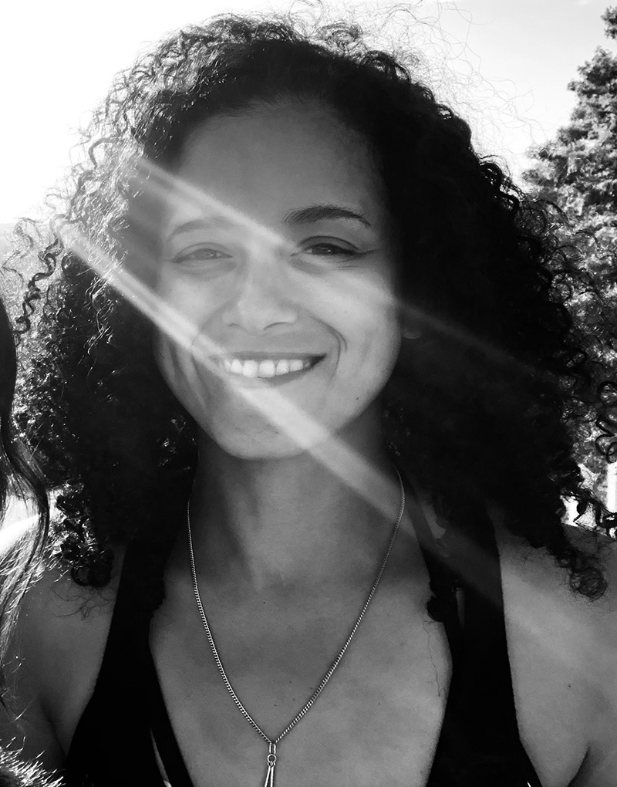

ABOUT ME
I MAKE THINGS | I BREAK THINGS | I FIX THINGS
I'm a game programming student currently studying at the Academy of Interactive Entertainment, with a particular interest in UI/UX and gameplay programming. I enjoy taking ideas and turning them into working systems, whether that's building an interface, implementing gameplay mechanics or solving the problems that come up along the way.
Through my studies, game jams and personal projects, I've gained experience working with Unity, Unreal Engine, C# and C++, while collaborating with designers, artists and other programmers to bring projects from concept through to implementation. Before moving into game development, I spent many years working in management, operations and training, which has shaped how I work within a team and the value I place on clear communication, organisation and being someone others can rely on.
